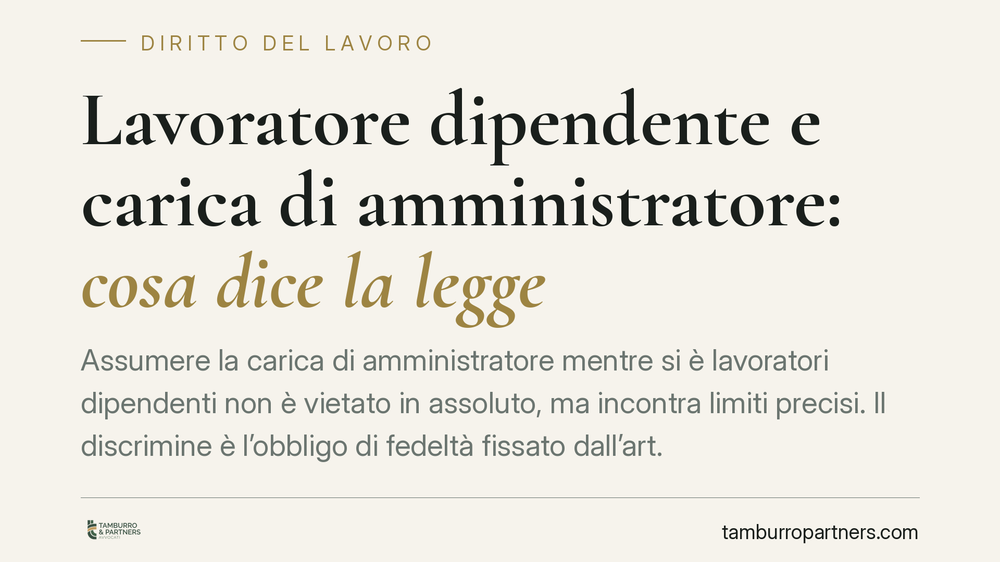

Lavoratore dipendente e carica di amministratore: cosa dice la legge
Assumere la carica di amministratore mentre si è lavoratori dipendenti non è vietato in assoluto, ma incontra limiti precisi. Il discrimine è l'obbligo di fedeltà fissato dall'art. 2105 del codice civile: quando l'incarico esterno genera conflitto di interessi con il datore, la Cassazione conferma la legittimità del licenziamento, soprattutto per i dirigenti.

Il punto di partenza: nessun divieto generale
Il nostro ordinamento non vieta al lavoratore dipendente di ricoprire cariche sociali, inclusa quella di amministratore di una società. Il rapporto di lavoro subordinato e la carica gestoria restano, in linea di principio, compatibili.
Il problema non è quindi la titolarità dell'incarico in sé, ma il modo in cui questo si colloca rispetto agli obblighi che il dipendente ha già assunto verso il proprio datore. È qui che entra in gioco l'obbligo di fedeltà.
Inquadramento normativo
La norma di riferimento è l'art. 2105 del codice civile, rubricato "Obbligo di fedeltà". La disposizione impone al prestatore di lavoro di non trattare affari, per conto proprio o di terzi, in concorrenza con l'imprenditore, e di non divulgare o utilizzare notizie attinenti all'organizzazione e ai metodi di produzione dell'azienda in modo da arrecarle pregiudizio.
Questo dovere va letto insieme ai principi generali di correttezza e buona fede nell'esecuzione del contratto, sanciti dagli artt. 1175 e 1375 del codice civile. La giurisprudenza di legittimità ne ha ricavato una lettura estensiva: l'obbligo di fedeltà non si esaurisce nel divieto di concorrenza formale, ma copre ogni condotta che leda gli interessi economici del datore o comprometta il rapporto fiduciario.
In questa cornice, assumere la carica di amministratore in una società che opera nello stesso settore, o che intrattiene rapporti commerciali con il datore, può integrare la violazione dell'art. 2105 c.c. anche in assenza di un atto di concorrenza "materiale".
Cosa dice la Cassazione
La Sezione Lavoro della Corte di Cassazione ha più volte confermato la legittimità del licenziamento del lavoratore che ricopra cariche sociali in condizione di conflitto di interessi. Il ragionamento si articola su due assi.
Il primo è il conflitto di interessi: quando l'attività svolta come amministratore si sovrappone o si contrappone agli interessi del datore, la fiducia alla base del rapporto si incrina. Non serve dimostrare un danno effettivo; è sufficiente l'idoneità della condotta a pregiudicare l'interesse aziendale.
Il secondo asse riguarda la posizione del dirigente. Per le qualifiche apicali l'obbligo di fedeltà è valutato con maggiore rigore, perché il dirigente accede a informazioni strategiche e rappresenta l'azienda verso l'esterno. In questi casi il margine di tolleranza si riduce sensibilmente.
Implicazioni pratiche
Per il lavoratore dipendente la conseguenza è concreta: la carica di amministratore, pur astrattamente lecita, può diventare giusta causa di licenziamento se interferisce con il rapporto di lavoro.
I profili più a rischio sono tre:
- Settore di attività: amministrare una società che opera nello stesso mercato del datore è il caso più esposto.
- Rapporti commerciali: anche una società non concorrente, ma fornitrice o cliente del datore, può generare conflitto.
- Utilizzo di informazioni aziendali: impiegare nella gestione della società dati o contatti appresi sul lavoro aggrava la posizione.
Per i dirigenti il quadro è ancora più stringente. L'intensità del vincolo fiduciario rende rilevanti condotte che, per altri inquadramenti, potrebbero risultare tollerabili.
Va ricordato che molti contratti individuali e collettivi contengono clausole specifiche sulle attività extra-lavorative e sull'obbligo di comunicazione preventiva. La loro violazione può costituire autonomo motivo di contestazione disciplinare.
Cosa fare in concreto
- Verificare le clausole del contratto individuale e del CCNL applicato in materia di incompatibilità, concorrenza e attività extra-lavorative.
- Comunicare per iscritto al datore l'intenzione di assumere la carica, specie se esiste un obbligo di preventiva autorizzazione.
- Valutare la sovrapposizione tra l'oggetto sociale della società da amministrare e il settore del datore, inclusi rapporti con clienti e fornitori.
- Astenersi dall'utilizzare informazioni, contatti o risorse acquisiti nel rapporto di lavoro per la gestione della società.
- Richiedere una valutazione legale preventiva prima di accettare l'incarico, soprattutto in caso di qualifica dirigenziale.
La compatibilità tra lavoro subordinato e carica gestoria è possibile, ma va costruita con trasparenza e nel rispetto dell'obbligo di fedeltà. Agire a monte riduce il rischio di contestazioni disciplinari.
---
*Contributo informativo a cura di Tamburro & Partners - Avv. Giuseppe Tamburro. Non costituisce parere legale.*
Ogni storia di lavoro ha i suoi tempi.
Se gestisci HR e vuoi un confronto su contenzioso, ispezioni o licenziamenti, scrivi allo studio. Ti rispondiamo entro un giorno lavorativo.